ESC or click to close
The Moro area of Kwara State lies within the Nigerian Schist Belt, a Proterozoic metamorphic terrain known for orogenic gold deposits associated with shear zones, hydrothermal alteration, and structural controls. Despite the region's documented gold occurrences, systematic remote sensing characterization of alteration and structural frameworks had not been undertaken at this scale.
This study applied ASTER multispectral imagery and Sentinel-1 SAR data to map hydrothermal alteration zones and lineament networks across the Moro study area. Both band ratio and Principal Component Analysis (PCA) techniques were applied independently and cross-validated to ensure robust identification of alteration assemblages.
The alteration assemblages targeted — argillic, propylitic, phyllic, alunite, and iron oxide — represent the diagnostic hydrothermal footprint of orogenic gold systems. Their spatial distribution, in combination with structural lineament density from both surface and sub-surface analysis, defines the prospectivity framework for the study area.
The integration of optical remote sensing (ASTER) with SAR-derived structural data (Sentinel-1) enables a multi-layer evidence approach that is more robust than either dataset alone — a methodology gaining traction in low-exposure terrains where field access is limited.
ASTER Level 1T imagery (14 bands, VNIR to TIR) and Sentinel-1 GRD SAR data acquired and preprocessed in ENVI and PCI Geomatica.
Band ratio indices computed for 5 alteration types. Crosta PCA applied independently to argillic and propylitic assemblages for cross-validation.
Surface lineaments digitized from Sentinel-1 SAR. Sub-surface lineaments extracted from aeromagnetic data. Combined density mapping and rose diagram analysis performed.
Alteration and structural layers integrated with geophysical data through weighted overlay to produce the final mineral prospectivity map.
Five hydrothermal alteration assemblages were mapped using ASTER band ratio indices. High-value (red/warm) pixels indicate zones of elevated alteration intensity — the primary targets for further investigation. The Fala area in the northeast and the Oloko Nka–Sama corridor in the south show consistent elevation across multiple alteration indices, suggesting genuine hydrothermal activity rather than spectral artefacts.
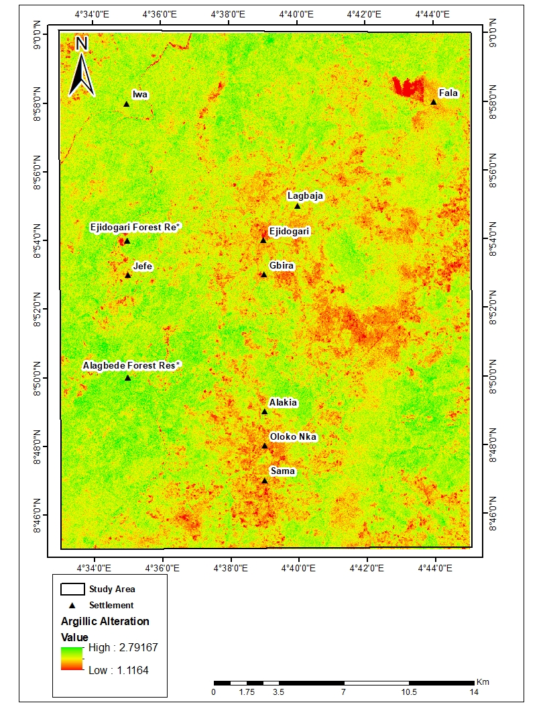
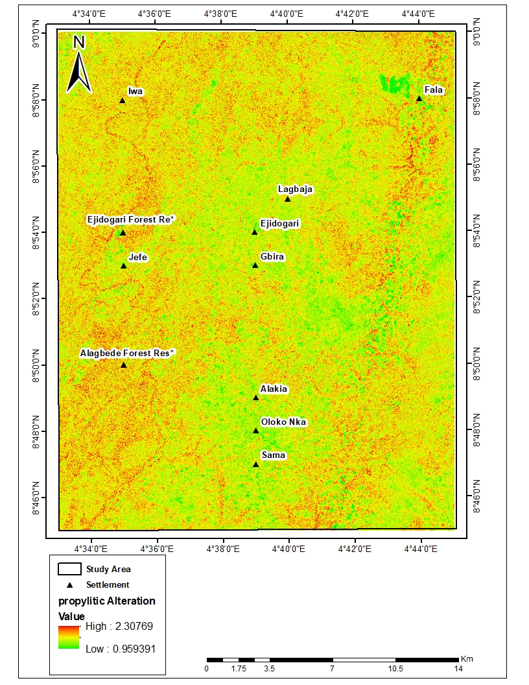
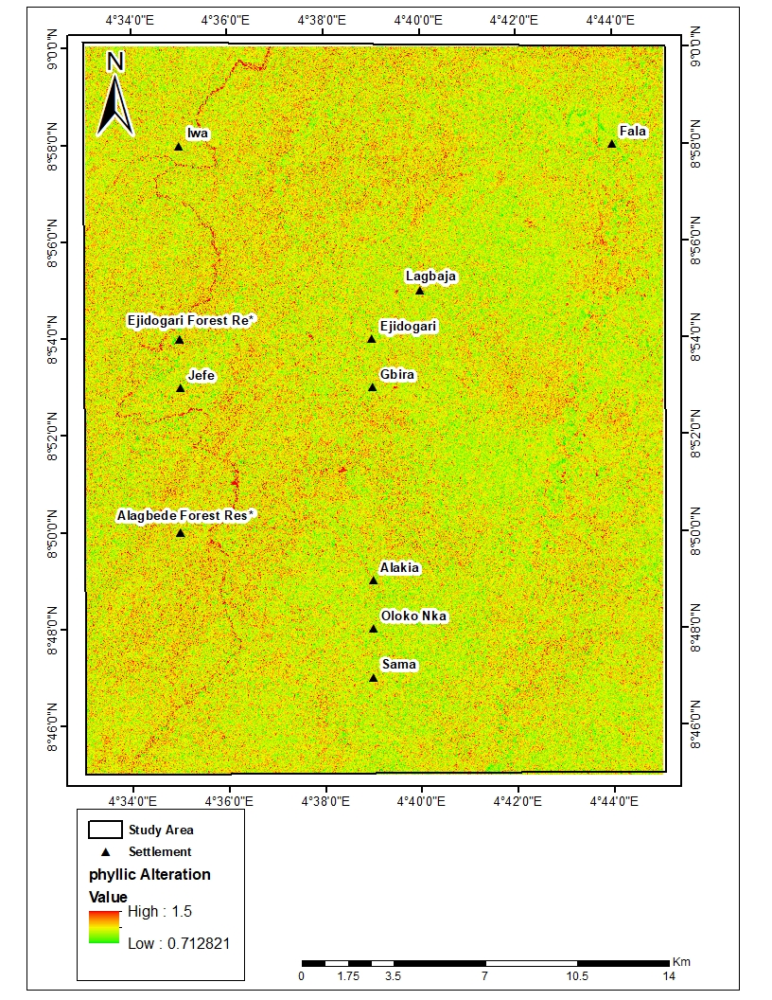
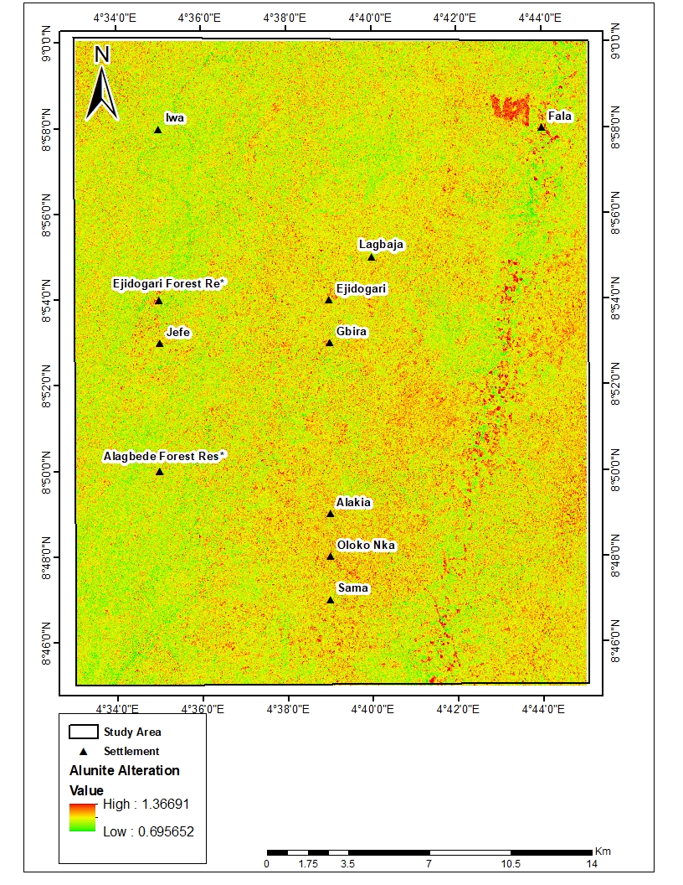
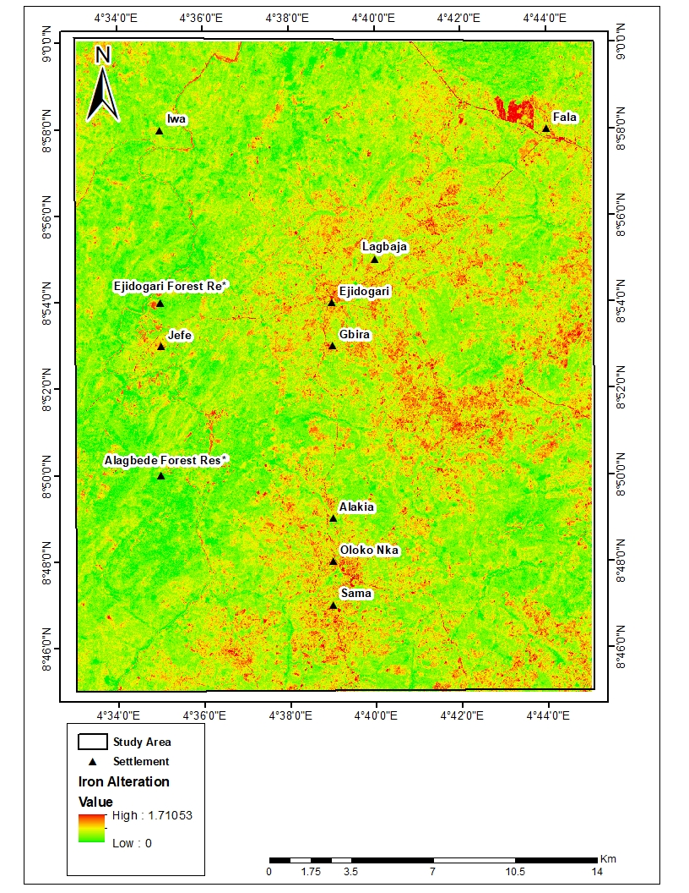
The Crosta PCA technique was applied independently to argillic and propylitic alteration assemblages. The PC3 components were selected based on eigenvector loading analysis — high positive loadings in PC3 identify pixels dominated by the target mineral assemblage. The spatial correlation between PCA outputs and band ratio maps confirms the robustness of the alteration identification and reduces the likelihood of false positives.
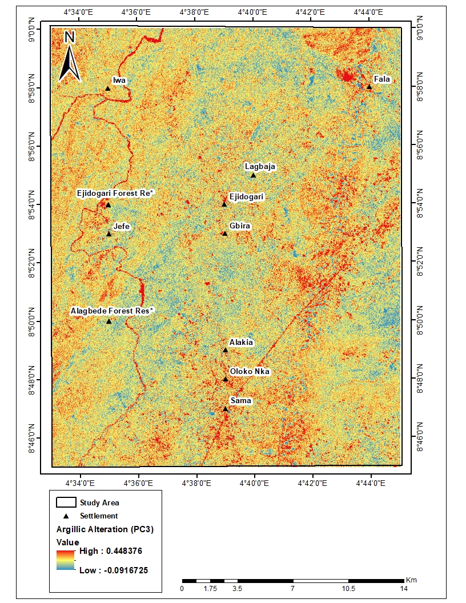
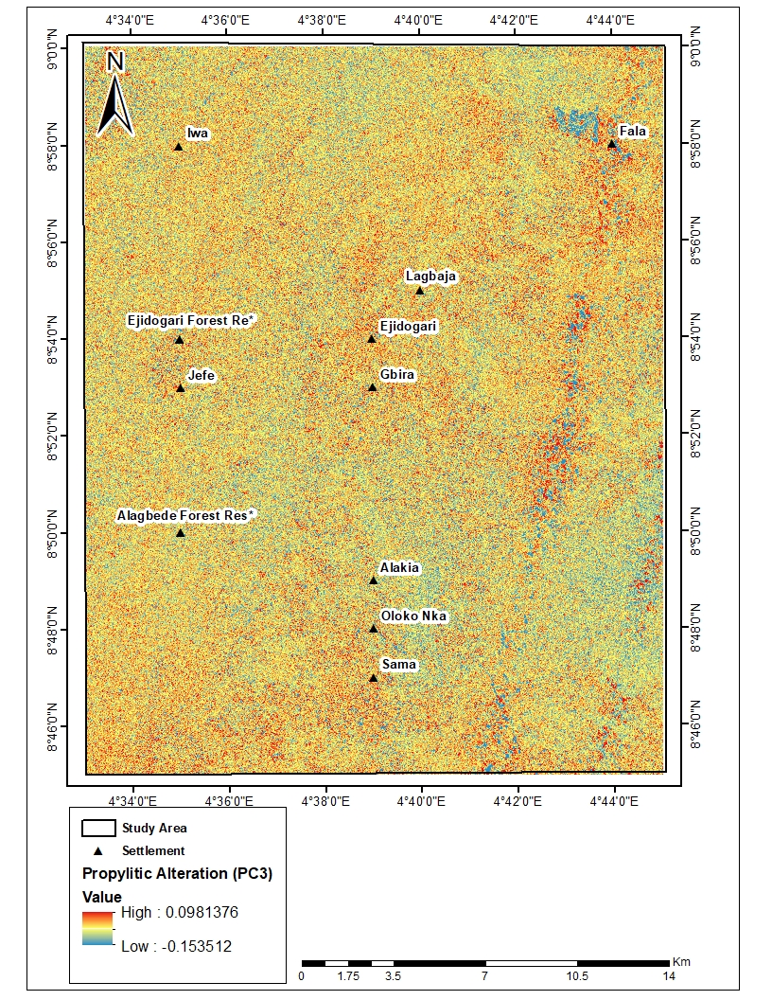
Surface lineaments were digitized from Sentinel-1 SAR imagery and validated against the aeromagnetic sub-surface lineament pattern. The rose diagram reveals a dominant NE-SW trending lineament system, consistent with the regional structural fabric of the Nigerian Schist Belt. NW-SE trending cross-structures are also present and are of particular interest as intersection zones — areas where two structural trends intersect are classic loci for orogenic gold trapping.
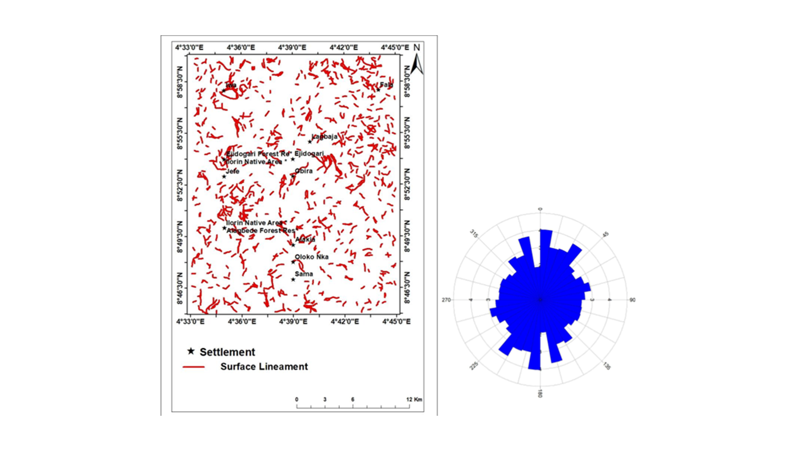
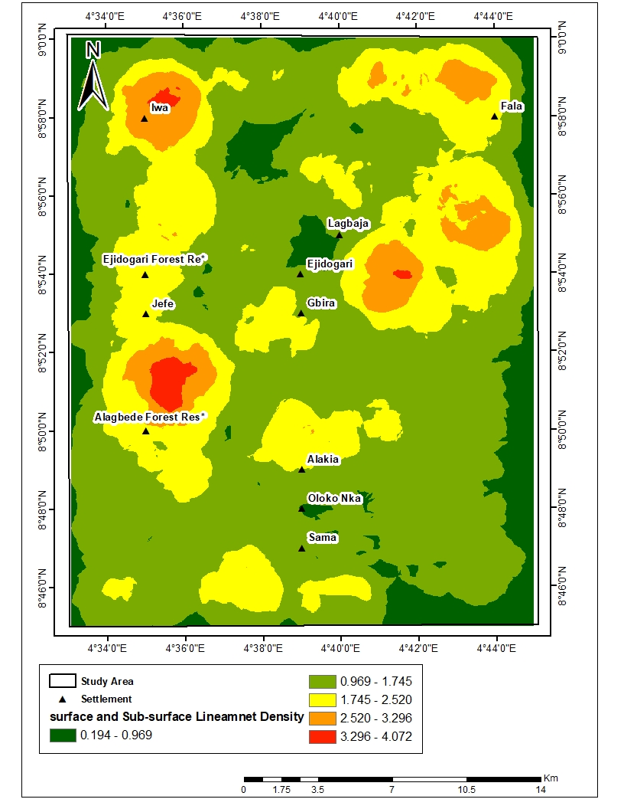
The final Mineral Prospectivity Map (MPM) was produced by integrating four evidence layers — hydrothermal alteration, structural control, heat source, and gold/ligand source — using Fuzzy AHP weighted overlay. The map classifies the study area into four prospectivity zones: Very Low, Low, Moderate, and High. The overlay with geology and lineaments confirms that High prospectivity zones align with structural intersections and specific rock units, particularly the Migmatite Gneiss and Quartzite Schist units hosting the most significant alteration signatures.
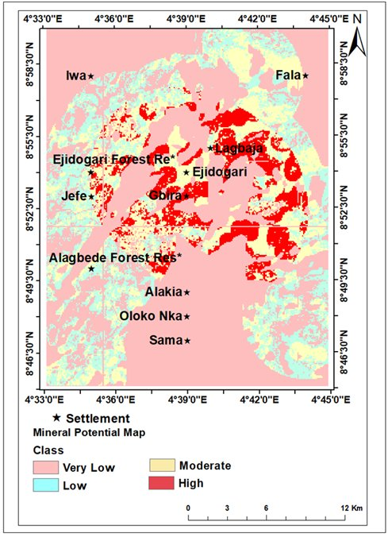
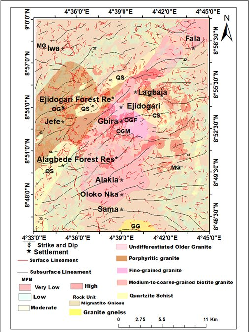
| Data | Source | Use |
|---|---|---|
| ASTER Level 1T | NASA/USGS Earth Explorer | 14-band multispectral imagery for alteration mapping (VNIR, SWIR, TIR) |
| Sentinel-1 SAR | Copernicus Hub (GRD) | Surface lineament extraction and structural mapping |
| Aeromagnetic Data | NGSA Nigeria | Sub-surface lineament extraction and geophysical anomaly mapping |
| Aero-radiometric Data | NGSA Nigeria | Complementary geophysical evidence layer |
The Fala area in the northeast consistently shows elevated alteration signatures across argillic, propylitic, and iron oxide indices — confirmed by both band ratio and PCA methods. This spatial convergence across multiple alteration assemblages is a strong indicator of genuine hydrothermal activity.
The dominant NE-SW structural trend identified in the rose diagram is consistent with the regional tectonic fabric of the Nigerian Schist Belt. These structures likely served as primary conduits for hydrothermal fluid migration and gold deposition during the Pan-African orogenic event.
The Iwa area shows the highest combined surface and sub-surface lineament density (3.3–4.1), making it a priority structural target. The coincidence of high lineament density with elevated argillic and iron oxide alteration elevates this zone as the primary exploration target.
Independent Crosta PCA analysis validated the band ratio results spatially — high-value PC3 pixels align with high band ratio zones for both argillic and propylitic assemblages. This cross-validation reduces spectral confusion risk and strengthens confidence in the alteration map as a genuine geological signal.